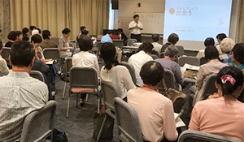

|
|
||
8月27日(火)、埼玉県内の消費者団体間の交流を促進し、団体の活動に関する相互理解と研鑽を深めるとともに、団体の活動を活性化することにより、消費者利益の向上を図ることを目的とする埼玉県委託事業「県内消費者団体全体研修会」を、埼玉会館ラウンジで開催し、16消費者団体66人と初めて公募した一般16人、計82人が参加しました。午前中は「コミュニケーションスキルアップ」についてグループで楽しく学び、午後は48人が日頃の活動について交流しました。
1．コミュニケーションスキルアップ講座  NPO法人ハンズオン埼玉の川田虎男さん、西川正さんを講師に迎えて、6人のグループを基本に、どんな時に話をちゃんと聞いてもらえたと感じるかなどを実感しながら、会議や話し合いについて考え合いました。「こんな会議は、いやだなぁ」のお題には、事例を書く手が止まらず、グループでの共有の場面では共感の声が飛び交いました。よい会議のためにできる工夫として、うなずく、質問する、ホワイトボードなどに書く等、学びました。会議の場面だけでなく、日頃のコミュニケーションを振り返る場にもなりました。 2．活動交流 午後は、48人が6つのグループに分かれて、午前中の講座の感想を交流し、次に各団体のいいところ報告として、日頃の活動交流を行いました。また、各団体がメンバーを増やすための呼びかけなど、工夫していることを交流し、最後に、グループで話し合ったことを報告して閉会しました。今回、初めて消費者団体だけでなく一般に広報し、16人が参加しました。
|
||